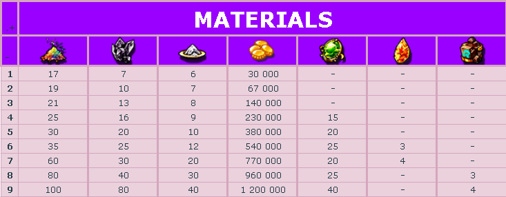

<div class="d-flex justify-content-center w-100">
    <section class="tattoo-carve">
      <h1 class="tattoo-carve-title-1">Tattoos<hr></h1>
  
        <div class="tattoos">
            
            <h3 class="tattoo-carve-title-2">How to get your Tattoos ?</h3>
            <br/>
            <p class="tattoo-carve-text">
                To get your Tattoos, you need to go in the Tattoo & Rune Map in NosVille to craft the scroll 
                related to the Tattoo you want. <br/>
                <br/>
                <br/>
                There are 4 Tattoo Scrolls : Bear, Snake, Lion & Eagle Loa Tattoo Partern. <br/>
                
                
                
                <br/>
                <br/>
                Each of them gives different Tattoos. <br>
                After crafting the scroll you want, you need to "Receive" this scroll in the second tab of 
                the NPC. It will give you a random Tattoo from the "type" of the scroll you used. <br>
                If the Tattoo you received doesn't suit you, you can go in the third tab of the NPC, and 
                simply use the Tattoo Removal button to get a new one.
            </p>
            <hr>
            <h3 class="tattoo-carve-title-3">How to upgrade your Tattoos ?</h3>
            <p class="tattoo-carve-text">
                You can upgrade your Tattoos to +9 maximum. It will increase the values of your Tattoo options.
                You can use the NPC to upgrade your Tattoos but you also have Tattoo Safeguard Scrolls. They 
                prevent you from a possible downgrade of your Tattoo.  <br/>
            </p>
            <hr>
            <h3 class="tattoo-carve-title-3">Upgrade Materials</h3>
            <p class="tattoo-carve-text">
                <br/>
            </p>
            <hr>
            <h3 class="tattoo-carve-title-3">All Tattoos</h3>
            <div class="all-tattoos">
                <div class="tattoo" *ngFor="let tattoo of tattoos">
                    <h4 class="tattoo-carve-title-4">{{tattoo.name}}</h4>
                    <div class="tattoo-scroll">
                        
                        <p class="tattoo-carve-text">{{tattoo.scroll}} scroll</p>
                    </div>
                    <a href="../../assets/img/tattoo-carve/tattoos-buffs/{{tattoo.img}}.png">
                         
                    </a>
                </div>
            </div>

            
            
            </div>
        
    </section>
</div>